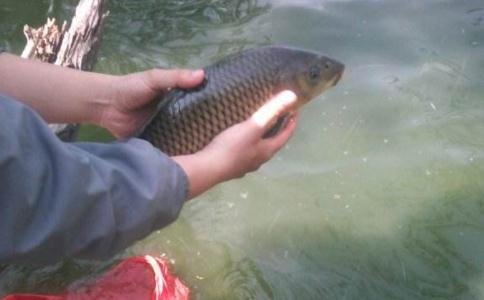

我首先找到债主，用手中的公款付清了5000元利息。然后要求继续借一年，并且把利息降为3000。债主是个爱贪小便宜的人，就答应了下来。送走债主后，我想到自己旧债未了又添新债，痛哭了一场。回忆起20多年来无奈的
这一年发生的事实在太多了，妻子被车撞了。那天，妻子骑着自行车，一辆背后驶来的轿车撞到了自行车的尾部，妻子连人带车倒在了地上。那个驾车的司机根本不会开车，连驾驶证都没有。她慌忙之中，把油门当作刹车踩了下去。任何一个对开车有点尝试的人都知道，这种状况下，轿车会顺着我妻子的身体径直压过去，而且在时间上不过几秒，这个
这件事我因祸得福得到了5000元的赔偿，更为可喜的是，经历
妻子变卖了一些首饰，凑够了钱，帮我补齐了公款上的亏空。难过算是度过了，可我也损失惨重，股票账户上只剩下9000元了。
我郑重和妻子谈了一次，原原本本说明了
“佛氏门中，有求必应”。重要的是要如理
我正式与大智慧
我按照约定开始了大规模的放生，想起来就放。孩子的压岁钱、我结婚时买的金坠子都被卖掉放得干干净净。有时一个月能放上几千元，而在以前，我连想都不敢想自己怎么会凭空有这么多的钱。平时为人处事，处处忍让，不跟人计较。纵然心里有些不快，也是自己劝慰自己。
也正是从这个时候开始，我做股票开始无往不利。渐渐地我开始掌握到做股票的要点所在，并且总结出自己的操作理念。从某种角度上说，股市是一个专门为人性弱点设置的陷阱。在社会生活的其他方面，人性的弱点可以用许多方法掩饰。但是在股市上，人性中太多的东西会在金钱的力量下不堪一击，溃不成军。赤裸面对的，是生命中最实质的部分。当用金钱剥开人性的弱点之后，做股票实质上就是人与人之间
一个人格低下、道德猥琐的人，一个斤斤计较、患得患失的人，一个懒惰贪婪、机关算尽的人，一个野心勃勃、不择手段的人，不可能在股市上获得最终的成功！而一个品德高尚、心胸宽广、热爱生活、
我的9000元资金在2006年5月份变成了21000元，而我放生布施的数量也达到了15000元。随着自己福报和心量的扩大，我对生活开始重新有了
这次的打击使我的人生在度陷进黑暗，也意味着在我放生念佛一年多来生活方面没有丝毫的改善，并且在中国股市500点的涨幅中，我仍是亏损的。回想起我的修行过程，应该说，我是不算精进的。因为懒散虚度了许多光阴，我和父母的关系一直处理得不够好，而我也没有完全克制掉淫欲的心，尽管一切的一切和以前相比是天翻地覆的变化。尽管我没有全部遵守我曾经与地藏菩萨的约定，可是我毕竟在做，实实在在地在做，我认为佛菩萨不该这样对待我。
佛菩萨对于一个人的加持只是在机缘成熟的时候他把道理告诉你，你能够得到几分加持，要看你能真正做到多少。如此而已！
我对学佛失去了信心，也决定不在放生了，我把许多事物都看得很淡。我退出了〈〈命自我立〉〉论坛的“功过公布”共修活动，也真正从心里上开始放弃学佛了。可是，当我真正强迫自己舍离的时候，我发现，念佛和行善已成为我生命中的一种习惯，一个不可缺少的部分。由于平时我无时无刻都在念佛，就连和别人对话时也是话一落口，佛号立即从心中提起，时刻念佛忆佛变成了一种自然的举动，仿佛吃饭睡觉一样不可缺少；一直大量放生，令我看见刀口下的众生就从内心油然而生一种怜悯，这种情感甚至连压抑都是不可能的。难道，这就是佛所说的自性中本有的东西吗？
我开始不希求任何果报的去做，放生完全处于一种对于众生被害的不忍。于是我的法门找到了，以前我涉猎于许许多多的法门，甚至不断的换法门，完全是一种对于世俗功利的贪婪。现在我真的看破了，我只念一句“阿弥陀佛”！阿弥陀佛代表着无量觉，十方三世一切诸佛哪个不是无量觉？地藏菩萨代表孝亲尊师，十方三世一切诸佛哪个不孝亲尊师？
我赚钱的速度越来越快，已经远远超越了我布施的速度。就在我完全沉浸在即将可以还清外债的喜悦之中时，单位上的一些人，看到我几乎天天赚钱，因为嫉妒拔掉了我的网线。我不能在单位炒股了，我一直做短线投资，最快的今天买明天卖。我的盘感和灵感都很好，在加上自己开了一些小智慧，最重要的是，布施不停的做，在负债累累的日子也不例外，所以一直可以赚到钱。
我决定辞掉自己的工作，反正对于充满勾心斗角的工作环境我也厌恶了。对于未来，我已有十足的把握！我和妻子商量把房子卖了当本钱，我们一起搬到襄樊去居住。因为热爱和了解这座城市，是诸葛亮的故乡。现在读到诸葛亮的教子文“夫君子之行，静以修身，俭以养德，非淡泊无以明志，非宁静无以致远……”还是升起一种莫名奇妙的感动。而且放生念佛，与世无争一直是我
梦想的生活，我太了解自己的根性了，我的习气很重，一旦接触境界就会动无明。在这一点上我与妻子一拍即合，我们把房子卖了12万，原来我们只打算卖10万的，在我们这座小城，有人曾经只给我的房子估价8-9万。
我们领导坚决不同意我的辞职，有同事不断在他面前安插莫须有的罪名告我的状。后来他主动问我，我只是实话实说，不反映任何人的是非。而领导居然要求我上班，还明示如果我同意，会让我来做科长，可是我对于官场早已没有了兴趣。我只希望他能解雇我，处于领导和父亲的关系我不好意思直接选择离开，现在还在上班。
而我的岳父在襄樊给妻子的哥哥购置了一套住房，他原来的房子也空置了下来。也就是说，只要我一搬到襄樊，就有一套现成装修豪华的房子让我住，而且岳父也明确告诉过我，5年内他们是不会用上这套房子的。所以我的事几乎可说是心想事成了。
现在是2008年1元份，新年的钟声即将敲响。我在股市上的资金达到了14万，远远超出我的要求。我也比计划提前还清了一些外债。我会在今年的6月份拿到卖房子的钱，而我本月的收入突破了2万元。一切发生的顺理成章有似乎过于巧妙！还是那句话：佛菩萨对于一个人的加持只是在机缘成熟的时候他把道理告诉你，你能够得到几分加持，要看你能真正做到多少。如此而已！